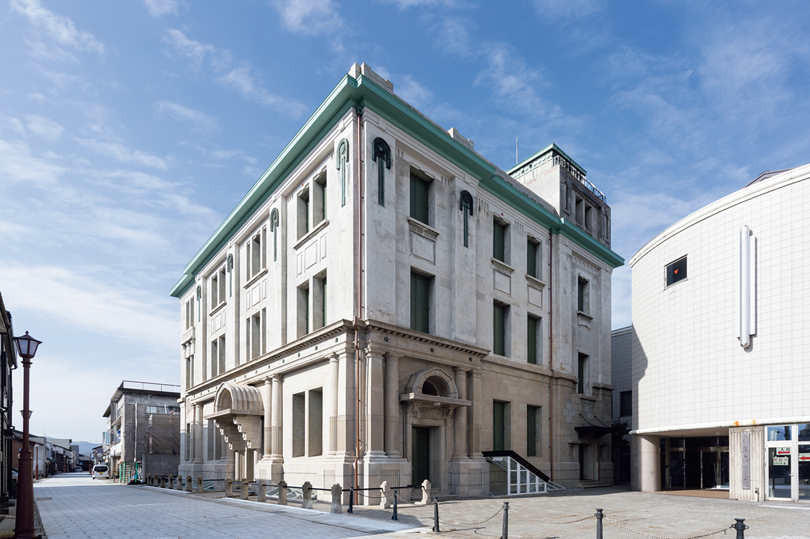
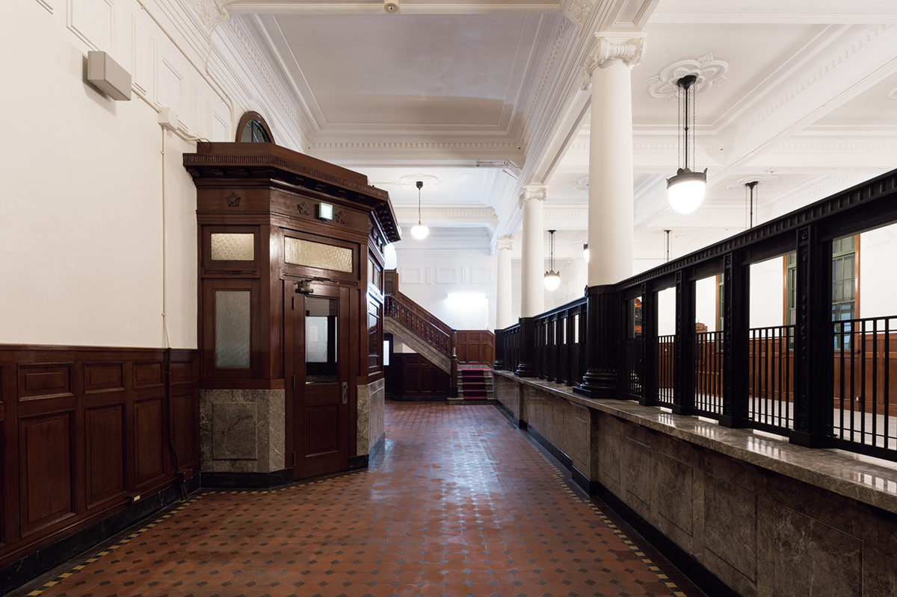
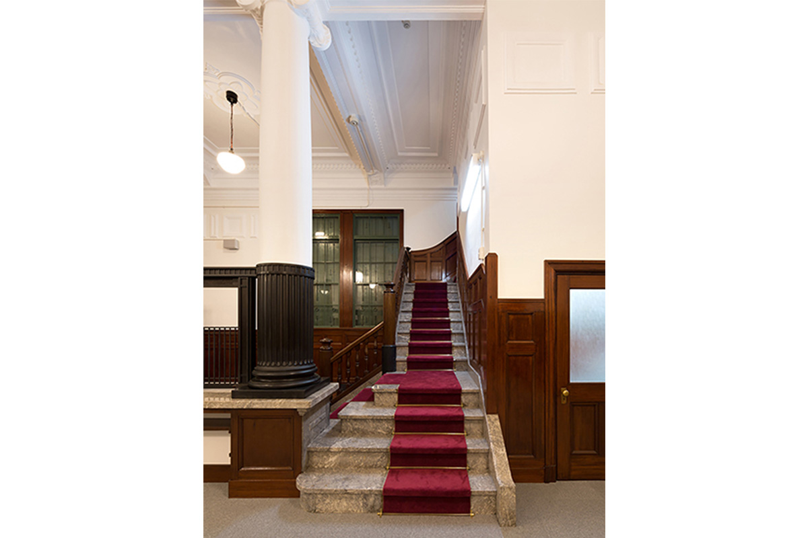
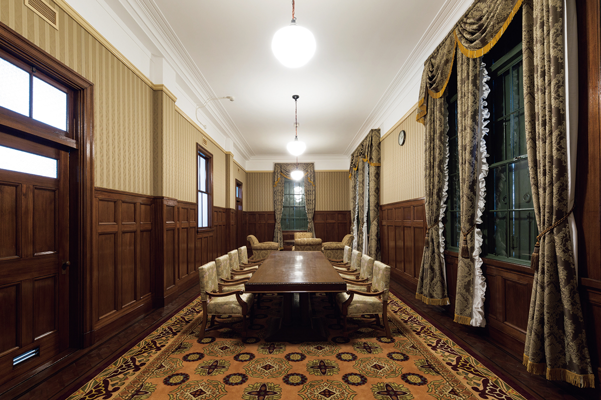
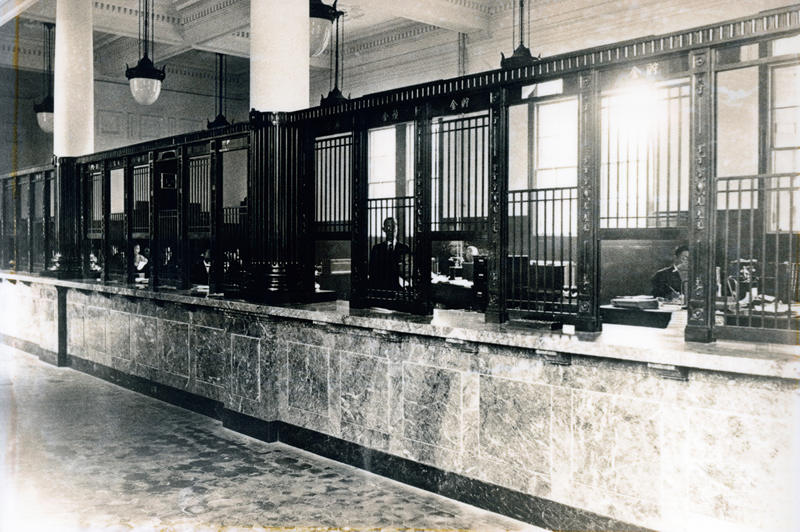

Префектура Фукуи · Цуруга · архитектура
Городской музей Цуруги: банк 1927 года, который строили для всего города

По дороге от порта Цуруга к центру города вдруг вырастает торжественный фасад. Почти полвека здесь работал банк, а с 1993 года в его залах рассказывают историю портового города.
Порт
Банк, который держал на себе торговлю
Цуруга стоит на побережье Японского моря в префектуре Фукуи и выросла как порт. Сюда заходили корабли китамаэбунэ, которые возили товары вдоль западного берега Японии, а когда к порту провели железную дорогу, через город пошёл поток людей и грузов. К концу 1920-х годов Цуруга была одним из главных международных портов на япономорском побережье страны.
В 1927 году на улице, ведущей от порта к центру, построили главный офис банка «Овада». Он должен был поддерживать торговлю порта деньгами.
Фасад почти симметричен и задаёт улице ясную ось. Так архитектура говорит то, что банку важнее всего: здесь надёжно. Стены сложены из кирпича на стальном каркасе, часть конструкций из железобетона.
Интерьер
Три этажа, три роли
Через главный вход попадаешь в большой операционный зал первого этажа. Потолки высокие, колонны стоят широко. Сохранилась мраморная стойка, за которой работали служащие, и большое хранилище за толстыми стенами: всё устроено так, чтобы работа шла надёжно.

На второй этаж ведёт мраморная лестница. Здесь принимали важных гостей, и в самой большой комнате когда-то стоял бильярдный стол. Комната для почётных гостей отделана богаче всех: её восстановили по сохранившимся коврам, тканям для стен и мебели времён банка.


Третий этаж был открыт для горожан и служил общественным залом. Пол целиком покрывали татами, была и сцена: банк принимал у себя городские собрания и праздники. Сохранился и старый лифт тех лет.
Город
Банк, открытый горожанам
В подвале при банке работала столовая. Банк «Овада» основал в 1892 году Сёсити Овада, который много сделал для развития Цуруги.
Строгий банк, внутри которого есть место для встреч, как в городском доме культуры, был для своего времени редкостью. Неудивительно, что здание называли «небоскрёбом Цуруги»: город связывал с ним большие надежды.

В 1977 году здание передали городу Цуруга. В 1978 году в нём открылся музей истории и народного быта, а в 1993 году он получил название Городской музей Цуруги. В 2015 году здание отреставрировали, а в 2017 году его признали важным культурным достоянием Японии.
Стоит начать с улицы: встать напротив фасада, а потом пройти по залам снизу вверх. По ходу становится видно, как одно здание служило деньгам, торговле и горожанам, и через него читается, как вырос сам город Цуруга.
Городской музей Цуруги
- Адрес
- префектура Фукуи, Цуруга, Аиои-тё, 7-8
- Телефон
- +81 770-25-7033
- Часы работы
- 9:00–17:00
- Выходные
- понедельник (если это праздник, то следующий рабочий день), новогодние праздники
- Цены / Вход
- 300 иен для взрослых